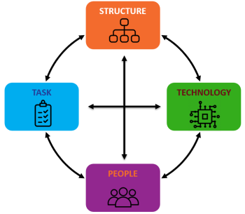

Preparing for Success
At its core digital transformation is about change management, having a clear idea of what you are trying to achieve, understanding how to implement it and making sure the benefits are realised in both the short and longer term.
Our expertise in delivering "Discovery-based" digital transformation programmes, avoids the cost, quality and adoption issues that blight many traditional transformation programmes.
This iterative approach, constantly testing assumptions, refining solutions and involving the team from the outset, ensures affordable, impactful solutions get delivered fast!
The Leavitt diamond model shows how, in order to be successful, the interdependencies between technology, people and processes need to be actively managed. These, along with pertinent marketing considerations, when delivering service innovation to customers, are discussed in more detail in the following sections.
- Task - Focusses on the desired outcomes of the digital transformation and the process of eliciting and evolving requirements.
- Technology – Considers both the adoption of standard business applications and the development of custom solutions to deliver new value propositions.
- People – Represents the employees within the organisation and how their skills and expertise need to adapt to the new operating paradigm.
- Structure – Defines the activities performed by employees, and how they interact with each other.
To find out more about the EMPEDATA digital strategy development service please get in touch
Task

A high-level objective for your discovery-based digital transformation journey is essential to provide context to the project. A well-defined design challenge, using the template shown, ensures the team have a clear understanding of what they are trying to achieve and , once complete, enables them to judge how successful they have been in delivering it.
Armed with a clear objective the next challenge is to then break down barriers that traditionally inhibit innovation:
- Conventionality– Using conventional techniques to solve problems results in conventional solutions. To be truly innovative new ways of working are needed. Design thinking provides an approach to engage diverse voices from across the organisation to develop a rich understanding of the problem.
- Risk Adversity – In a risk adverse culture the tendency is to kill off novel and innovative ideas in favour of safer and better understood solutions. Design thinking promotes a culture of experimentation and failing fast to ensure novel solutions get properly explored.
- Ownership- An innovation won’t succeed unless the company employees get behind it. Design thinking provides a methodology to involve people in the process of generating ideas, winning support and ensuring ownership of the developed solutions.
The book, Value Proposition Design by Alexander Osterwalder, provides more detail of the 5 phases of the design thinking process. As experienced Design Thinking facilitators EMPEDATA can lead members of your team through these phases in a series of fun and engaging workshops to elicit user centric requirements, develop solutions that work and importantly ensure commitment to change from across the organisation.
- Empathise - Immersion in the customer experience to develop empathy and an understanding of the users.
- Define - These ideas are then consolidated and refined to define a clear problem statement.
- Ideate – Potential solutions are then explored, challenging assumptions and looking at the problem from new angles.
- Prototype – Examines the proposed solutions in more detail through the development of low fidelity models.
- Test - Using these models the team then test their assumptions to better understand how users would interact with the solution.

To find out more about the EMPEDATA workshop facilitation services please get in touch.
Technology
An overview of how EMPEDATA support digital transformation programmes through the development of dedicated applications and analytical solutions is provided on the relevant pages of this site. However, before tearing off chasing new and exciting solutions it's important to understand the capabilities already being provided by your existing IT systems.
Customer relationship management (CRM) and enterprise resource planning (ERP) tools form the backbone of most company data warehouses. The first step should always be to see if these systems can, or could be developed to, provide the required capabilities. If you are interested in implementing a CRM and/or ERP system, both Salesforce and Microsoft, provide very capable, but expensive solutions. As a more affordable solution we recommend considering Dolibar as a great open-source alternative.
People
Any process is only as good as the people who operate it. As your business becomes more digital the demands on your employees may change. To support them in this transition it may be necessary to invest in training to enable them to adapt and excel in a new working environment.
In addition to redefining existing roles a range of new capabilities will also be required in order to deliver and sustain your digital transformation. While the long-term objective should be to develop these skills internally, you're probably going to need a hand to get started. With experienced practitioners across all 7 key digital transformation disciplines, EMPEDATA offer a unique capability to both augment and coach your existing team, ensuring you have to the required skills for both the short and longer term.
- Transformation Leader / Product Owner - Understand how the various initiatives contribute to the strategic goals of the programme, provide clear prioritisation of tasks and ensures the different functions contribute, and adapt to, the new ways of working.
- Data Steward - Ensure there is a clear policy regarding where data is held and how its accuracy is maintained. Security and accessibility requirements also need to be controlled managing user permissions and ensuring compliance with the necessary legislation e.g. GDPR
- Design thinking workshop facilitation / System Analyst - Utilising design workshops and user research techniques to define requirements and potential solutions. The output from this role is a well-defined and validated solution of sufficient fidelity to allow the development to commence.
- Application Developers - This category covers a wide range of skills from managing databases, transforming the data to provide greater value, building ingestion pipelines and APIs to ensure the availability of data where it is required and the creation of applications to provide interfaces with which the users interact. See Productionise for more information.
- Data Scientists / Analyst - Developing mathematical and machine learning models to deliver descriptive, diagnostic, predictive, prescriptive and/or cognitive capabilities. See Analyse for more information
- Scrum Master / Agile Project Manager - Responsible for ensuring the team follows agile processes and practices, establishing an environment where the team can be effective, clearing obstacles and protecting them from outside interruptions and distractions. For a more comprehensive understanding of this role and the value it provides we recommend reading Scrum The Art of Doing Twice The Work In Half the Time
- Process / Application Owner - Either the principal user or somebody with the ability to represent the users' interests, consolidating feedback, informing design decisions and evaluating the suitability of the developed solutions.
To find out more about the EMPEDATA digital skills and coaching services please get in touch.
Business Model

A business model allows an organisation to evaluate its strengths, weaknesses, opportunities and threats relative to existing and potential future competitors. When evaluating what your future "digitally enabled" business model should look like, it may be helpful to consider how a start-up would disrupt the existing business model through either:
- Using digital technology to deliver the services you currently offer more effectively.
- Fundamentally change the cost structure of the business, free from the constraints of legacy processes.
With this in mind, business model innovation is about building on your existing capability, while leveraging technology to transform how value is delivered to your customers. Your business model should also consider how this value will be promoted, delivered and monetised as well as the resources and costs associated with providing that service.
Throughout this process it is essential to constantly evaluate the proposed services, ensuring they continue to satisfy the 3 key tenants of innovation:
- Desirability - What do people desire?
- Viability - What can be financially justified?
- Feasibility - What is technically and organisationally possible?
To find out more about business model innovation we suggest reading Business Model Generation by Alexander Osterwalder.
Digital Identity
An often overlooked consideration, when building Web Apps, is ensuring the identity and brand they present align with the company values you are trying to portray. We suggest you carefully consider each of the 3 key web identity channels, detailed below, when developing a new service to ensure the most impactful solution possible gets delivered:
Selecting a name
Web Apps require an address with which people can access the service from their browser. This address should be both memorable and relevant and can be achieved through using one of the following:
- New top-level domain - Securing a dedicated top level
.comdomain name (TLD) can be challenging and expensive, but the recent growth of new TLD options such as.digitaloffer new possibilities and allows you to explore more creative and descriptive options. - Subdomain - A website normally use the subdomain
www.but additional subdomains can be used to access your new service. e.g.https://maps.google.com - Subdirectory - a subdirectory from your existing domain can also be used, as in
https://www.google.com/maps
Creating a logo
When building a Web App people will principally identify with its logo. The logo will feature prominently in the header of the website, on the user's browser as a favicon and as an icon on their home screens, it may even be used on marketing literature to promote your service. When selecting a logo there are four main principals that should guide your selection:
- Appropriateness - The logo should convey your brand message to the target audience.
- Simplicity - A minimal and simple logo tends to attract people more easily.
- Scalability - The logo design should work whether it is the size from a tiny favicon to a giant billboard.
- Timelessness - It takes time to gain brand recognition, so choose a design that will last.
Choosing a design system
A consistent look and feel across your application will improve the user experience and support your brand identity. Design systems, such as Material Design, developed by Google, establishes principles, styles and guidelines to help users navigate your webpage effortlessly. Standardised icons, buttons and navigation components help to provide a familiar feel, while state management and interactivity make controls feel tactile and responsive, while your brand can be supported through colour and typography theming.
Digital Marketing
Once up and running the challenge is then to get people to visit your site and to develop a better understanding how they interact with it. This can then be used to inform future developments and optimise the user experience.
- Search engine optimisation (SEO) - is the process of optimising websites so that they rank well on search engines through organic (non-paid) search.
A search engine works by matching the user search query with information ascertained from the site meta descriptions, titles, loading speeds, links and content keywords
to determine the order in which the content will appear.
By structuring your site well, you can increase the likelihood of it being prioritised in the result.
For more information check out the Google SEO starter guide
- Web analytics - are a powerful tool allowing you to track website visitors to understand who they are and how they interact with your site. For more information check out the Google Analytics Academy.